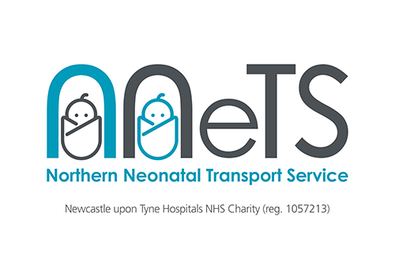

NNeTS
The Northern Neonatal Transport Service (NNeTS) is a dedicated neonatal transport service, moving babies who need specialist care from neonatal units based within hospitals around the North of England. The service is hosted by Newcastle Hospitals NHS Trust and based at the Royal Victoria Infirmary (RVI) in Newcastle upon Tyne. NNeTS; operates 24 hours a day; 365 days a year and is staffed by Specialist Neonatal Transport Nurses, Advanced Neonatal Nurse Practitioners and Doctors.
The team operates:
Day time: 08:00-20:30
Night time: 20:00-08:30
NNeTS transfers in excess of 70 babies per month. Transfers are arranged according to individual babies needs to ensure that babies are moved to the right place for the right care at the right time.
The team transfer your babies in specialist transport equipment, which allows them to provide care up to and including intensive care, safely, in the back of an ambulance. Whenever possible we aim to ensure that a parent will be offered the chance to accompany their baby during transport.
Further information on the Neonatal Network covered by the NNeTS team, as well as information about the neonatal units in our region, can be found on the Northern Neonatal Network web page;
http://www.nornet.org.uk/
As a team we are happy to receive feedback, whether through the feedback questionnaire we handout on transfers, or by other means. We are also happy to answer any questions; you may have about the service we provide. For Transport referrals, advice or to arrange an intrauterine transfer please ring: 0191 2303020. For general enquires please email: Beverley Forshaw (Specialist Nurse Team Lead) Beverley.Forshaw@nuth.nhs.uk or Dr Robert Tinnion (Clinical Lead) robert.tinnion@nuth.nhs.uk
